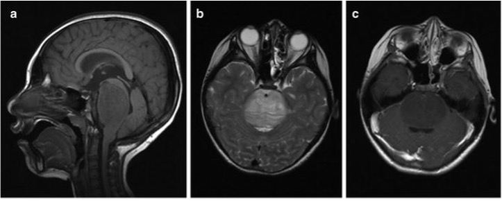

The development of nanoparticle thin films has garnered tremendous interest in the past decade due to the interdisciplinarity of application and variety of approaches for fabrication. The unique set of chemical properties poised by nanoparticle systems delivers a challenging field that necessitates novel approaches to fundamental problems. One area of application for these thin film systems exists in the characterization of novel cancer therapeutics for treatment strategies such as radiation enhancement via Auger therapy. Auger therapy is a therapeutic adjunct which has yet to be fully characterized with respect to the effective range of electrons emitted from metallic nanoparticles. The purpose of this literature review is to outline previous efforts toward assembling robust nanoparticle thin-film systems. Specifically focusing on the various polyelectrolyte candidates for both nanostructure scaffolding and cell culture as well as chemical means of stabilization and cross-linking between substrates. Strategies for both the chemisorption and physisorption of nanoparticle thin-films, and approaches for the characterization and confirmation of the fabrication quality of these films are also explored. Lastly, cell-culture protocols, and methods for evaluating the therapeutic range of Auger electrons is discussed.

While the overall mortality due to cancer in the United States has dropped 27% from 1999 to 2019, nervous system related cancers, however, remain unchanged in their outcomes and prognoses since 1992.1, 2 Despite decades of research, nervous system related cancers continue to resist improvements in outcomes due to the unique cell-intrinsic and microenvironmental properties of neural tissues, providing a unique set of therapeutic challenges. The two factors that complicate successful therapy with conventional techniques include blood-brain barrier (BBB) permeability and the infiltrative nature of certain neoplasms. The blood-brain barrier, a system of tight junctions and membrane proteins protects the nervous system from exposure to circulating compounds, limiting therapies such as systemic chemotherapy.3, 4 Additionally, the infiltrative nature of certain neoplastic metastases confines a large percentage of these tumors to an inoperative classification due to the infiltration of delicate structures in the nervous system.5, 6 Next-generation therapeutics must address these clinical challenges and provide a unique set of characteristics to overcome existing limitations.7
The use of therapeutic nanoparticles has gained significant traction as a potential treatment adjunct for high-grade and drug-resistant cancers. FDA approved superparamagnetic iron oxide (Fe3O4) nanoparticles (SPIONs) have gathered considerable attention due to their exceptional biocompatibility, excellent magnetic resonance imaging (MRI), evasion of glomerular filtration and BBB sequestering, drug loading, and unique radiation enhancement and magnetic heating properties.8-14 Currently, there are several ongoing clinical trials investigating the dynamic application of nanoparticle systems to treat wide varieties of brain tumors, with many preclinical investigations focusing on the enhancement of low-dose radiation as a strategy to combat these high-risk diseases. A large percentage of these therapeutics are focusing intently on the capacity of radiation enhancement as an additive to current radiative treatment protocols.15
Radiation enhancement is an adjunct to conventional radiation therapy capitalizing on the Auger electron phenomenon, a quantized effect directly related to Einstein’s photoelectric theory. Auger emission occurs when high Z metals are bombarded via external energy sources, knocking out an inner core electron and creating a high energy vacancy that is filled by an outer shell electron.16 (Figure 1) The energy difference upon occupation of the vacancy is either released as a photon or occasionally as an Auger electron. These ejected electrons have demonstrated exceptional potential for therapeutic uses which have been studied clinically as Auger therapy.17 A unique prospect of Auger therapy is the capability of lowering the overall fractionated doses of radiation, potentially mitigating some of the strenuous aspects of systematic and poorly targeted dosing, limiting the collateral damage to unintended structures.18 While the clinical prospects of Auger therapy are exciting, several technical challenges prevent its current implementation. Among questions of toxicity, targeting, and physiological kinetics, the largest dearth in knowledge surrounds the consistency and therapeutic range of these high energy electrons.19-24 As of yet, no investigators have been able to address therapeutic distances for Auger therapy with respect to cellular toxicity, hindering the advancement of this approach into mainstream clinical protocols.
Attempts to explicate the effective range of these electrons has been fixated on a spectroscopic methodology, indicating the need for novel approaches to the mechanistic component of their use. The scope of this literature review is to provide the resources and context regarding the development of a novel thin-film system capable of elucidating this phenomenon. As shown in Figure 2, the long-term goal for this research is to develop a functional, monodispersed nanoparticle thin film via chemical or physical methods which can support and sustain a tunable physical spacer that can facilitate cell culture. Accordingly, this literature review will focus on the techniques of physisorption and chemisorption of functionalized, biocompatible nanoparticles such as magnetite iron oxide (Fe3O4), the viability, tunability, and stability of polyelectrolyte complexes as tunable spacers and cell culture scaffolds. Such topics comprise phase I of this research endeavor and focus on steps necessary to obtain proof-of-concept systems and fabrication methods, which, once validated, will enable the pursuit of phase II investigations, such as cell culture conditions, cell-death and proliferative assays, radiation dosing schematics, and further investigation into dual-therapies of magnetic hyperthermia.
Brainstem tumors pose a unique set of therapeutic challenges. These tumors comprise 15% of pediatric central nervous system (CNS) neoplasms in children of or below 14 years of age in the United States, commonly differentiating from glial tissue.25 Of all brainstem tumors, diffuse intrinsic pontine gliomas (DIPG) are the most abundant morphologies in pediatric patients and account for over 80% of brainstem gliomas in the given age range. Due to the inherent infiltrative nature of this cancer morphology, coupled with its predominantly high-grade features, its critical anatomical location and, subsequent inoperability, DIPG diagnosis leads to uniformly poor outcomes with fewer than 10% survival 2 years following diagnosis and fewer than 5% after 5 years.26 Accordingly, there has been tremendous interest in investigating novel means for the treatment of DIPG and DIPG related neoplasms. While DIPG occurs in all age groups, it is most commonly diagnosed between 5 and 9 years, with equal predilection for both sexes.27 Given the local infiltration and pontine localization, DIPGs are not eligible for surgical resection. Due to these surgical limitations, biopsies are inviable for diagnostic purposes, leading clinicians to heavily rely on imaging for diagnosis, resulting in inconsistent classification.28 Current treatment protocols heavily rely on fractionated doses of radiation and palliative care to prolong lifespan.29 Current clinical courses for DIPG include intravenous steroid administrations, x-ray therapy (XRT), and select chemotherapeutic adjuncts all with the sole purpose of increasing lifespan and improving quality of life (QOL).30 Of the fewer than 5% of patients who survive DIPG long term, there have been no discernable differences in either the cancer morphology or the treatment course that could account for such outcomes. Despite current efforts, the median overall survival (MOS) for patients with DIPG is 8-11 months.31 The specific cellular differentiation and pathological characterization of DIPG can be shown through histological analysis of post-mortem biopsy samples. Routine haematoxylin and eosin (H&E) staining as well as the relevant immunohistochemical select proteins such as MIB1, GFAP, p53, MAP2, NeuN, and nestin are common to confirm DIPG indications.32, 33 Additionally, molecular diagnostics are performed when adequate sample volume is obtained to screen for mutational morphologies. Molecular analysis of DIPG biopsies often includes targeted sequencing of H3F3A, HIST1H3B/C, PIK3CA, TP53, and ACVR1 using a combination of microarray and ion torrent technologies.34, 35 DIPG samples commonly report histone H3 and TP53 mutations whose acetylation assays can be utilized to investigate cell proliferation.36 While these means of diagnosis prove reputable, the access of obtaining this tissue is often confined strictly to patients enrolled in clinical trials or in the exceptional clinical cases in which a proper diagnosis would drastically differentiate treatment. Otherwise, the region necessary to obtain these tissue samples is deemed too high of a risk for minimal clinical returns given the current statistical outcomes of DIPG regardless of variation.
By taking advantage of the innate properties of nanoparticles, a simplified and elegant approach to the fabrication of thin-film systems is an available strategy. Pioneered by Nicholas Kotov of Syracuse University, layer-by-layer self-assembly of nanoparticle thin films stabilized by polyelectrolyte systems demonstrated exceptional fabrication quality and procedural simplicity.(11) Kotov isolated mixtures of cadmium sulfide, lead sulfide, and titanium dioxide nanoparticles within cationic layers of poly(diallyldimethylammonium chloride). These cationic polyelectrolytes were first deposited atop of the various substrates such as gold, quartz, platinum, and ITO-coated glass due to the inherent negative charges of these systems via aqueous dipping of the substrates. The anionic charges of the nanoparticle systems complemented the overcompensated polyelectrolyte charge and assembled neatly due to electrostatic interactions. Following the deposition of the nanoparticles out of colloid solution, subsequent deposition of the cationic polyelectrolyte was performed to sandwich the nanoparticle thin film. From this fabrication strategy, the Kotov group manufactured nanoparticle-polyelectrolyte complex systems capable of semiconductor effects. Kotov utilized a combination of UV-visible spectroscopy along with transmission electron microscopy to characterize the establishment of the film system. As expected, UV-vis spectroscopy data revealed consistent layer-by-layer increases in the film absorbances proportional to the number of nanoparticle layers as confirmed by transmission imaging, thus establish both robust means of construction and validation. Further work developing electrostatic self-assembly of nanoparticle-polyelectrolyte complexes was done by the Gerhardt group to characterize these assemblies based on the dominant surface charge of the initial substrate.37 Specifically investigating the layer-by-layer assembly of four bilayers of polyethyleneimine (PEI) and poly(sodium styrene sulfonate) (PSS) and the subsequent addition of indium tin oxide (ITO) nanoparticles. By utilizing quartz-crystal microgravimetry (QCM) and atomic force microscopy (AFM), the characterization of these hybrid thin films could be analyzed under varying proton concentrations to elucidate underlying effects of substrate charge. It was found that, based on solution pH and ionic strength, these hybrid thin films developed in one of two ways. The film can construct as either a recovery regime or a linear growth regime, with the former consisting of a steady gain in mass and thickness and the latter being a stable indication of film deposition. These two regimes can be modulated based on the pH of the solution, lending optimization capabilities for the stability of the generation kinetics of thin films. A large concern with respect to the self-assembly of these film systems is the potential for nanoparticle interpenetration between polyelectrolyte layers, potentially lending inconsistent distances between the nanoparticle film and eventual cell culture. Polyelectrolyte thin films exhibit strong tendencies for subsurface mixing of the substituents opposed to defined and discrete boundaries between each material.38 Additionally, mechanistic analysis has revealed the dynamics of nanoparticle adsorption, highlighting potential areas of ligand stacking during the unfurling and compression of the polyelectrolyte system.39 While this interpenetration is dependent on polyelectrolyte chain size, computational evidence indicates potential interruption of the establishment of a monolayer thin film of nanoparticles.40 It should be noted that polyelectrolyte complexes promote three-dimensional hierarchical structures to stabilize surface interactions. While these formulations lend to more stable systems, they eliminate the capability of ensuring a well-formed monolayer of nanoparticles. Additionally, measurement modalities to determine the extent of nanoparticle migration have yet to be adequately developed to enable the level of precision necessary for the aforementioned applications. One potential avenue to quantify the extent of migration but not position is the use of optical techniques such as dual-polarization interferometry to correlate the film density and refractive indices with assumptions regarding nanoparticle migration. Previous work supporting an approach such as this was done by the Johal laboratory in 2008, where metrics such as density and film dissipation change as a reflection of the mechanical dynamics of the polyelectrolyte adsorption.39 Accordingly, substantial investigation into the modalities of measuring nanoparticle interpenetration and migration are critical. Additionally, potential strategies to mitigate the migration of these systems needs to be explored for potential salvage.
A promising approach to the retention of the spatial distribution of the nanoparticle system capitalizes on the covalent crosslinking of the polyelectrolyte system. Polyelectrolyte crosslinking involves a series of reductive reactions to facilitate covalent bonds between the individual film substituents, often substantially attenuating physical properties such as wettability, stiffness, and degradation profiles of these systems.41 A model system that demonstrates exceptional promise with respect to an increase in discrete layering is the use of chitosan (CHI) and alginate (ALG) polymers in conjunction with crosslinkers such as glutaraldehyde and ferulic acid.42, 43 The use of glutaraldehyde facilitates the formulation of covalent bonds between the aldehyde on alginate with the amine on chitosan to produce covalent imine bonds via a Schiff base reaction.44 While these glutaraldehyde crosslinked systems show a noticeable difference in film stability and rigidity, there is a notable decrease in the biocompatibility of these films due to glutaraldehyde’s cellular toxicity.45, 46 Ferulic acid crosslinking facilitates a covalent bond between a carboxylic moiety on chitosan with a terminal alcohol on alginate and demonstrates strong reductions in hysteresis and water vapor transmission, and notable increases in light-blocking and tensile strength.42 (Figure 4) Additionally, the use of ferulic acid has not been shown to interfere with the favorable cell culture properties of CHI-ALG matrices.47 While the ferulic acid crosslinking strategy shows promise with respect to cell culture compatibility and thin film enhancement, there is no literature to suggest any effect on the interpenetration of particles within thin films.
An additional strategy for the use of molecular crosslinkers would be to directly link a nanoparticle coating to the polymer surface it is deposited onto. Approaches that capitalize on this would require a polymer coating on the surface of the nanoparticle compatible with chemical crosslinking. Based on aforementioned approaches, one example would be to encapsulate a nanoparticle core with a polyelectrolyte such as chitosan which would then be capable of crosslinking with alginate thin films, potentially anchoring the nanoparticle to the surface to mitigate migrations and interpenetrations. While particles such as these have been fabricated and are commercially available, there is no literature to support such crosslinking and fabrication strategies.48
One way to circumvent the issue of nanoparticle migration is to chemically fix nanoparticles onto the substrate. Chemical anchoring of nanoparticle complexes to physical substrates has been a recently popularized field due to the notable increase in biosensor capabilities offered by the increase in surface area and overall surface roughness. Typically, chemisorption of nanoparticles is derived from one of two routes; (i) the direct precipitation or vapor deposition of the nanoparticle into the chemical fixture, or (ii) the use of functional moieties to, post-precipitation, link whole nanoparticles to surfaces via chemisorption methods. (Figure 5) Both approaches have proved to be successful and the decision between the two fabrication methods largely depends on the concern for severity of conditions, as the precipitation method often necessitates high temperatures and harsh reagents which can have undesirable impacts on certain substrates and functional moieties. While usually comparable in fabrication quality, precipitation and vapor matrix methods often enable superior outcomes due to the ability to entirely cover surfaces mechanically and enable bulk-phase formulation methods which circumvent potential sources of repulsion and interaction between individual particles and their respective coatings/functionalization, thus often enabling a superiorly constructed films and architectures.
Direct precipitation of nanoparticles into thin film assemblies was first demonstrated by Brust et. al (10) in 1996 through the reduction of AuCl4 in the presence of alkanethiol surfaces. This two-phase water-toluene interface allows for the growth of metallic clusters with simultaneous attachment of thiol monolayers, thus creating a stable, functionalized thin film. This method, while efficient and resilient to chemical changes, is subject to poor film coverage and relatively small (1-3 nm) particle sizes. Further work on this approach was refined in 1999 by the Zhong group out of SUNY (9) via the formation of gold colloid monolayers on silicon oxide surfaces via the use of amine starburst dendrimer molecules. After surface functionalization, the colloid solution was refluxed to enable film formation into the polymer system. Capitalizing on the native chemical moieties and secondary functionalization of nanoparticles offers an array of potential strategies to chemically immobilize particles to a substrate film. Popular commercially available nanoparticles include coatings and functionalization such as amine terminations (-NH2), polyethylene glycol encapsulation (PEG), carboxylic acid functionalization (COOH), thiol terminations (-SH), and polyelectrolyte coatings, among others.49-53 Accordingly, this wide array of available moieties facilitates a broad array of linkage strategies to accommodate experimental and conditional needs. Both amine and carboxylic acid functionalized nanoparticles can participate in carbodiimide chemistry (EDC/NHS) to form covalent bonds between the functionalization moiety and a target carboxylic acid/amine, respectively.54 EDC/NHS chemistry functions by facilitating the formation of a bond between a carboxylic acid and an amine. (Figure 6) First, the carboxylic acid is activated by the EDC crosslinker, forming an unstable acilysourea intermediate which is then immediately substituted for an amine-reactive ester (NHS). These activated substrates are very stable and will immediately form an amide bond in the presence of a free amine.
This EDC/NHS strategy has been frequently paired with additional strategies to either immobilize a primary amine or a carboxylic acid to a substrate surface, which will be addressed further. Additionally, this same approach is often selected to add targeting ligands, enzymes, and fluorescent/luminescent tags to nanoparticle surfaces.55-58 The chemisorption of amine/carboxylic acid functionalized nanoparticles has been reported in applications from layering of nanosheets to the direct deposition of nanoparticle films on rigid substrates, often to enhance electrocatalytic and electrochemical properties.59, 60 While carbodiimide chemistry has proven to be exceptionally robust, the main limitation in the establishment of nanoparticle thin films rests not with the effectiveness of EDC/NHS coupling but rather the extent of coverage of necessary surface functional groups to harbor the amide bond. (Figure 7) With this such proposed experiment, concerns regarding the ability to populate a silicon substrate with the necessary functional groups is proven to be the most limiting factor in this design.61 A preferential method to establish the necessary functionalization of the silicon surface is through the use of reactive and functionalized silanes. Silanes are chemical compounds capable of nucleophilic attack of the oxide surface of native silicon.62 Commercially available silanes come with a wide array of potential terminal functionalization, include carboxylic acids which can facilitate EDC/NHS chemistry.63 Such silanes offer a promising solution for the covalent attachment of necessary chemical groups for further scaffolding. The principal limitation, however, remains to be the extent of coverage of the film itself. The field of silane development and the optimization of film silanization generates tremendous industrial research due to the broad applications of such films. A comprehensive guide for the optimization of the silane 3-aminopropyltriethoxysilane (APTES) provides a strong starting point for the generation of any silane thin film.64 According to Howarter et. al, factors such as silane concentration, reaction temperature, and reaction time all factor into the extent of distribution, packing density, and three-dimensional morphologies of the films, showing optimal and most uniform coverage at times above one hour, with less than 33% silane concentration. Temperature was not shown to influence roughness or thickness when exceeding one hour. For the development of monolayer thin films, minimization of surface roughness is a paramount concern. To facilitate minimal surface roughness, a focus on the orientation of bound silanes is indicated. The Söderholm group out of the University of Florida has done exceptional work to characterize and optimize the orientation of triethoxysilane groups on silica surfaces, allowing for the further development of robust protocols to maximize film packing.65 Additionally, evidence exists to suggest that factors such as carbon chain length and bond order influence the packing density of silane films, where superior packing has been found with shorter chains and fewer system conjugations.66
The formulation and characterization of this novel system will be done in two phases, with the first phase focusing heavily on the proof of concept of the nanoparticle-polyelectrolyte assembly and characterizing the film quality via the use of scanning electron microscopy (SEM), atomic force microscopy (AFM), quartz crystal microgravimetry (QCM), dual-wavelength ellipsometry, UV-visible spectroscopy, and dual polarization interferometry. Multiple measurement modalities will enable the determination of film thicknesses, retention stability, density, refractive indexes, and mass change per unit area. With these metrics, I will be able to fabricate robust thin films of varying thicknesses with precision as low as 10 nm varieties. Following the optimization, fabrication, and characterization of these film systems, phase II of this work will focus on practical approaches to cell culture and control radiation experiments excluding nanoparticles from the film matrix. Such control experiments will aim to determine fractionated radiation doses that instigate cell damage but not total death to enable the use of proliferative and cell-damage assays such as gamma-histone H2AX phosphorylation. Following such controls and successful cell culture, proper irradiation experiments will be conducted.
In order to investigate the ejection range of therapeutic Auger electrons, the development of a robust and tunable nanoparticle-polyelectrolyte system must first be developed. Accordingly, interrogating the feasibility of both the electrostatic assembly system and the covalent strategy is necessary. Two different types of silane coupling agents will be used, silane-PEG-COOH via NanoOCS and carboxyethylsilanetriol disodium salt (CEST) via Gelest will be utilized. These silane systems will be built on piranha etched silicon treated with UV-ozonation to expose all silicon oxide moieties. The silanization protocol will be done via standard vapor deposition through 10% silane solutions in 95% EtOH at room temperature under gentle vacuum in a sealed container.67 Following vapor-assisted silanization, films will be evaluated for changes in thickness via ellipsometry. Upon successful silanization, EDC/NHS loading of the substrate will be done using a 1:1 ratio of EDC/NHS in ultrapure water. The silanized film will then be submersed in the activating solution and left to sit for one hour under vacuum and then rinsed with ultrapure water and dried under a stream of nitrogen. Subsequent thickness measurements will ensue. Following successful activation, amine functionalized nanoparticles will be added dropwise to the dry surface until coverage is obtained. The system will be left to sit for one-hour and then rinsed gently and dried. Subsequent scanning electron microscopy images will be taken to determine the superior nanoparticle coverage between the two silanes. This system, once loaded, will be run on flow-cell QCM to observe the EDC/NHS kinetics in real time and to observe film retention and stability. In order to compare the efficacy of chemical methods compared to electrostatic self-assembly, layer-by-layer thin films of PEI and PAZO will be constructed and imaged utilizing SEM. Following, films with differing terminal layers will be constructed and nanoparticles will be added dropwise and then rinsed, dried, and imaged under SEM to determine which terminal polyelectrolyte facilitated the most uniform and abundant deposition. Additionally, varying functionalized nanoparticles will be attempted to observe for any unanticipated electrostatic interference, such as aminated vs. non-aminated nanoparticles. These systems will be run in flow-cell QCM to determine representations of mass change as a function of coverage. Similarly, such experiments will enable the analysis of nanoparticle retention over time. Once both methods have been investigated, a decision will be made regarding the best method to proceed with respect to the fabrication of the spacer system. The layer-by-layer assembly of the polyelectrolyte spacer will be investigated through modalities such as QCM, SEM, ellipsometry, and DPI in order to determine the linear construction of the system, where I expect to see linear trends in thickness, mass, and absorbance. Further inquiries into the interpenetration of the nanoparticle film will need to be conducted through an array of density-based measurements such as dual polarization interferometry (DPI).
Determination of the effective therapeutic range of Auger electrons will be done by utilizing two nearly-identical experimental schemes. One, where a nanoparticle thin film rests beneath a polyelectrolyte spacer, and another where no nanoparticles exist yet the spacer matches the thickness identically. Both systems will undergo cell culture on the surface and simultaneous irradiation. The film system lacking the nanoparticle layer will act as a control system, allowing for percent change difference in cell death to elucidate the effect between the two systems and highlight any potential therapeutic advantages from the nanoparticle system. Several iterations will be conducted with varying polyelectrolyte thicknesses until no statistical difference is observed between the control and nanoparticle systems. Such determination will enable the formulation of a fundamental understanding of effective therapeutic ranges as a function of distance and cell death percentage. (Figure 8)
Once a proof-of-concept model is obtained, the same system can be applied to differing nanoparticle cores, diameters, cell types, and polyelectrolyte systems that can better mimic cellular environments to best develop the precision medicine tools necessary to combat today’s most challenging clinical problems.
The development of novel cancer therapeutics to challenge some of the most difficult clinical diagnoses is one of the most relevant fields in translational and bench research with hopeful prospects to improve QOL and outcomes of high-risk patients. While the scope of this research proposal is within the realm of diffuse midline gliomas and brainstem tumors, the novelty of this therapy is not limited to only these clinical classifications. Nanoparticle therapies provide promise not only for other cranial tumors such as glioblastoma multiforme (GBM), but also cancers of the lymphatic system, lung, and blood, to name a few. Therefore, this fundamental understanding will facilitate not only clinical improvements with respect to neurosurgical cases, but also has the potential to revolutionize all of radiation-based medicine.
1. Prevention, C. F. D. C. a. An Update on Cancer Deaths in the United States. https://www.cdc.gov/cancer/dcpc/research/update-on-cancer-deaths/index.htm. 2. Institute, N. C. Cancer Stat Facts: Brain and Other Nervous System Cancer. https://seer.cancer.gov/statfacts/html/brain.html. 3. Phoenix, T. N.; Patmore, D. M.; Boop, S.; Boulos, N.; Jacus, M. O.; Patel, Y. T.; Roussel, M. F.; Finkelstein, D.; Goumnerova, L.; Perreault, S.; Wadhwa, E.; Cho, Y. J.; Stewart, C. F.; Gilbertson, R. J., Medulloblastoma Genotype Dictates Blood Brain Barrier Phenotype. Cancer Cell 2016, 29 (4), 508-522. 4. Gerstner, E. R.; Fine, R. L., Increased permeability of the blood-brain barrier to chemotherapy in metastatic brain tumors: establishing a treatment paradigm. J Clin Oncol 2007, 25 (16), 2306-12. 5. Mantravadi, R. V.; Phatak, R.; Bellur, S.; Liebner, E. J.; Haas, R., Brain stem gliomas: an autopsy study of 25 cases. Cancer 1982, 49 (6), 1294-1296. 6. Yoshimura, J.; Onda, K.; Tanaka, R.; Takahashi, H., Clinicopathological study of diffuse type brainstem gliomas: analysis of 40 autopsy cases. Neurologia medico-chirurgica 2003, 43 (8), 375-382. 7. Bhargav, A. G.; Mondal, S. K.; Garcia, C. A.; Green, J. J.; Quiñones‐Hinojosa, A., Nanomedicine revisited: next generation therapies for brain cancer. Advanced Therapeutics 2020, 3 (10), 2000118. 8. Hanini, A.; Schmitt, A.; Kacem, K.; Chau, F.; Ammar, S.; Gavard, J., Evaluation of iron oxide nanoparticle biocompatibility. Int J Nanomedicine 2011, 6, 787-794. 9. Shen, Z.; Wu, A.; Chen, X., Iron Oxide Nanoparticle Based Contrast Agents for Magnetic Resonance Imaging. Molecular Pharmaceutics 2017, 14 (5), 1352-1364. 10. Wei, H.; Bruns, O. T.; Kaul, M. G.; Hansen, E. C.; Barch, M.; Wiśniowska, A.; Chen, O.; Chen, Y.; Li, N.; Okada, S.; Cordero, J. M.; Heine, M.; Farrar, C. T.; Montana, D. M.; Adam, G.; Ittrich, H.; Jasanoff, A.; Nielsen, P.; Bawendi, M. G., Exceedingly small iron oxide nanoparticles as positive MRI contrast agents. Proceedings of the National Academy of Sciences 2017, 114 (9), 2325. 11. Ivask, A.; Pilkington, E. H.; Blin, T.; Käkinen, A.; Vija, H.; Visnapuu, M.; Quinn, J. F.; Whittaker, M. R.; Qiao, R.; Davis, T. P.; Ke, P. C.; Voelcker, N. H., Uptake and transcytosis of functionalized superparamagnetic iron oxide nanoparticles in an in vitro blood brain barrier model. Biomater Sci 2018, 6 (2), 314-323. 12. Chiarelli, P. A.; Revia, R. A.; Stephen, Z. R.; Wang, K.; Jeon, M.; Nelson, V.; Kievit, F. M.; Sham, J.; Ellenbogen, R. G.; Kiem, H.-P.; Zhang, M., Nanoparticle Biokinetics in Mice and Nonhuman Primates. ACS Nano 2017, 11 (9), 9514-9524. 13. Retif, P.; Pinel, S.; Toussaint, M.; Frochot, C.; Chouikrat, R.; Bastogne, T.; Barberi-Heyob, M., Nanoparticles for Radiation Therapy Enhancement: the Key Parameters. Theranostics 2015, 5 (9), 1030-1044. 14. Silva, A. C.; Oliveira, T. R.; Mamani, J. B.; Malheiros, S. M. F.; Malavolta, L.; Pavon, L. F.; Sibov, T. T.; Amaro, E., Jr.; Tannús, A.; Vidoto, E. L. G.; Martins, M. J.; Santos, R. S.; Gamarra, L. F., Application of hyperthermia induced by superparamagnetic iron oxide nanoparticles in glioma treatment. Int J Nanomedicine 2011, 6, 591-603. 15. Ku, A.; Facca, V. J.; Cai, Z.; Reilly, R. M., Auger electrons for cancer therapy–a review. EJNMMI radiopharmacy and chemistry 2019, 4 (1), 1-36. 16. Chang, C. C., Auger electron spectroscopy. Surface Science 1971, 25 (1), 53-79. 17. Buchegger, F.; Perillo-Adamer, F.; Dupertuis, Y. M.; Delaloye, A. B., Auger radiation targeted into DNA: a therapy perspective. European journal of nuclear medicine and molecular imaging 2006, 33 (11), 1352-1363. 18. O'donoghue, J.; Wheldon, T., Targeted radiotherapy using Auger electron emitters. Physics in Medicine & Biology 1996, 41 (10), 1973. 19. Soenen, S. J.; De Cuyper, M., Assessing iron oxide nanoparticle toxicity in vitro: current status and future prospects. Nanomedicine 2010, 5 (8), 1261-1275. 20. de la Fuente, J. M.; Berry, C. C.; Riehle, M. O.; Curtis, A. S., Nanoparticle targeting at cells. Langmuir 2006, 22 (7), 3286-3293. 21. Hagens, W. I.; Oomen, A. G.; de Jong, W. H.; Cassee, F. R.; Sips, A. J., What do we (need to) know about the kinetic properties of nanoparticles in the body? Regulatory toxicology and pharmacology 2007, 49 (3), 217-229. 22. Seah, M., Quantitative Auger electron spectroscopy and electron ranges. Surface Science 1972, 32 (3), 703-728. 23. Lindau, I.; Spicer, W., The probing depth in photoemission and Auger-electron spectroscopy. Journal of Electron Spectroscopy and Related Phenomena 1974, 3 (5), 409-413. 24. Kassis, A. I., Cancer therapy with Auger electrons: are we almost there? Journal of Nuclear Medicine 2003, 44 (9), 1479-1481. 25. Vanan, M. I.; Eisenstat, D. D., DIPG in Children – What Can We Learn from the Past? Frontiers in Oncology 2015, 5 (237). 26. Walker, D. A.; Punt, J. A.; Sokal, M., Clinical management of brain stem glioma. Archives of disease in childhood 1999, 80 (6), 558-564. 27. Ostrom, Q. T.; Gittleman, H.; Fulop, J.; Liu, M.; Blanda, R.; Kromer, C.; Wolinsky, Y.; Kruchko, C.; Barnholtz-Sloan, J. S., CBTRUS statistical report: primary brain and central nervous system tumors diagnosed in the United States in 2008-2012. Neuro-oncology 2015, 17 (suppl_4), iv1-iv62. 28. Chiarelli, P. A.; Chu, J. K.; Krieger, M. D., Brainstem Tumors. Textbook of Pediatric Neurosurgery 2020, 1957-1983. 29. Gajjar, A.; Bowers, D. C.; Karajannis, M. A.; Leary, S.; Witt, H.; Gottardo, N. G., Pediatric brain tumors: innovative genomic information is transforming the diagnostic and clinical landscape. Journal of Clinical Oncology 2015, 33 (27), 2986. 30. Negretti, L.; Bouchireb, K.; Levy-Piedbois, C.; Habrand, J. L.; Dhermain, F.; Kalifa, C.; Grill, J.; Dufour, C., Hypofractionated radiotherapy in the treatment of diffuse intrinsic pontine glioma in children: a single institution’s experience. Journal of neuro-oncology 2011, 104 (3), 773-777. 31. Hargrave, D.; Bartels, U.; Bouffet, E., Diffuse brainstem glioma in children: critical review of clinical trials. The lancet oncology 2006, 7 (3), 241-248. 32. Ballester, L. Y.; Wang, Z.; Shandilya, S.; Miettinen, M.; Burger, P. C.; Eberhart, C. G.; Rodriguez, F. J.; Raabe, E.; Nazarian, J.; Warren, K., Morphologic characteristics and immunohistochemical profile of diffuse intrinsic pontine gliomas. The American journal of surgical pathology 2013, 37 (9), 1357. 33. Yadavilli, S.; Scafidi, J.; Becher, O. J.; Saratsis, A. M.; Hiner, R. L.; Kambhampati, M.; Mariarita, S.; MacDonald, T. J.; Codispoti, K.-E.; Magge, S. N., The emerging role of NG2 in pediatric diffuse intrinsic pontine glioma. Oncotarget 2015, 6 (14), 12141. 34. Castel, D.; Philippe, C.; Calmon, R.; Le Dret, L.; Truffaux, N.; Boddaert, N.; Pagès, M.; Taylor, K. R.; Saulnier, P.; Lacroix, L., Histone H3F3A and HIST1H3B K27M mutations define two subgroups of diffuse intrinsic pontine gliomas with different prognosis and phenotypes. Acta neuropathologica 2015, 130 (6), 815-827. 35. Taylor, K. R.; Mackay, A.; Truffaux, N.; Butterfield, Y. S.; Morozova, O.; Philippe, C.; Castel, D.; Grasso, C. S.; Vinci, M.; Carvalho, D., Recurrent activating ACVR1 mutations in diffuse intrinsic pontine glioma. Nature genetics 2014, 46 (5), 457-461. 36. Khuong-Quang, D.-A.; Buczkowicz, P.; Rakopoulos, P.; Liu, X.-Y.; Fontebasso, A. M.; Bouffet, E.; Bartels, U.; Albrecht, S.; Schwartzentruber, J.; Letourneau, L., K27M mutation in histone H3. 3 defines clinically and biologically distinct subgroups of pediatric diffuse intrinsic pontine gliomas. Acta neuropathologica 2012, 124 (3), 439-447. 37. Peng, C.; Thio, Y. S.; Gerhardt, R. A., Effect of Precursor-Layer Surface Charge on the Layer-by-Layer Assembly of Polyelectrolyte/Nanoparticle Multilayers. Langmuir 2012, 28 (1), 84-91. 38. Liu, G.; Zou, S.; Fu, L.; Zhang, G., Roles of chain conformation and interpenetration in the growth of a polyelectrolyte multilayer. The Journal of Physical Chemistry B 2008, 112 (14), 4167-4171. 39. Lane, T. J.; Fletcher, W. R.; Gormally, M. V.; Johal, M. S., Dual-beam polarization interferometry resolves mechanistic aspects of polyelectrolyte adsorption. Langmuir 2008, 24 (19), 10633-10636. 40. Jeon, J.; Panchagnula, V.; Pan, J.; Dobrynin, A. V., Molecular dynamics simulations of mutilayer films of polyelectrolytes and nanoparticles. Langmuir 2006, 22 (10), 4629-4637. 41. Schneider, A.; Vodouhê, C.; Richert, L.; Francius, G.; Le Guen, E.; Schaaf, P.; Voegel, J.-C.; Frisch, B.; Picart, C., Multifunctional polyelectrolyte multilayer films: combining mechanical resistance, biodegradability, and bioactivity. Biomacromolecules 2007, 8 (1), 139-145. 42. Li, K.; Zhu, J.; Guan, G.; Wu, H., Preparation of chitosan-sodium alginate films through layer-by-layer assembly and ferulic acid crosslinking: Film properties, characterization, and formation mechanism. International journal of biological macromolecules 2019, 122, 485-492. 43. Huang, J.; Zajforoushan Moghaddam, S.; Thormann, E., Structural investigation of a self-cross-linked chitosan/alginate dialdehyde multilayered film with in situ QCM-D and spectroscopic ellipsometry. ACS omega 2019, 4 (1), 2019-2029. 44. Cordes, E.; Jencks, W., On the mechanism of Schiff base formation and hydrolysis. Journal of the American Chemical Society 1962, 84 (5), 832-837. 45. Gough, J. E.; Scotchford, C. A.; Downes, S., Cytotoxicity of glutaraldehyde crosslinked collagen/poly (vinyl alcohol) films is by the mechanism of apoptosis. Journal of Biomedical Materials Research: An Official Journal of The Society for Biomaterials, The Japanese Society for Biomaterials, and The Australian Society for Biomaterials and the Korean Society for Biomaterials 2002, 61 (1), 121-130. 46. Bigi, A.; Cojazzi, G.; Panzavolta, S.; Rubini, K.; Roveri, N., Mechanical and thermal properties of gelatin films at different degrees of glutaraldehyde crosslinking. Biomaterials 2001, 22 (8), 763-768. 47. Aduba, D. C.; Yang, H., Polysaccharide fabrication platforms and biocompatibility assessment as candidate wound dressing materials. Bioengineering 2017, 4 (1), 1. 48. Unsoy, G.; Yalcin, S.; Khodadust, R.; Gunduz, G.; Gunduz, U., Synthesis optimization and characterization of chitosan-coated iron oxide nanoparticles produced for biomedical applications. Journal of Nanoparticle Research 2012, 14 (11), 1-13. 49. Mikhaylova, M.; Kim, D. K.; Berry, C. C.; Zagorodni, A.; Toprak, M.; Curtis, A. S.; Muhammed, M., BSA immobilization on amine-functionalized superparamagnetic iron oxide nanoparticles. Chemistry of Materials 2004, 16 (12), 2344-2354. 50. Yang, J.; Zou, P.; Yang, L.; Cao, J.; Sun, Y.; Han, D.; Yang, S.; Wang, Z.; Chen, G.; Wang, B., A comprehensive study on the synthesis and paramagnetic properties of PEG-coated Fe3O4 nanoparticles. Appl. Surf. Sci. 2014, 303, 425-432. 51. Yu, S.; Chow, G. M., Carboxyl group (–CO 2 H) functionalized ferrimagnetic iron oxide nanoparticles for potential bio-applications. Journal of Materials Chemistry 2004, 14 (18), 2781-2786. 52. Yee, C.; Scotti, M.; Ulman, A.; White, H.; Rafailovich, M.; Sokolov, J., One-phase synthesis of thiol-functionalized platinum nanoparticles. Langmuir 1999, 15 (13), 4314-4316. 53. Ghosh, S.; Jiang, W.; McClements, J. D.; Xing, B., Colloidal stability of magnetic iron oxide nanoparticles: influence of natural organic matter and synthetic polyelectrolytes. Langmuir 2011, 27 (13), 8036-8043. 54. Fischer, M. J., Amine coupling through EDC/NHS: a practical approach. In Surface plasmon resonance, Springer: 2010; pp 55-73. 55. Jazayeri, M. H.; Amani, H.; Pourfatollah, A. A.; Pazoki-Toroudi, H.; Sedighimoghaddam, B., Various methods of gold nanoparticles (GNPs) conjugation to antibodies. Sensing and bio-sensing research 2016, 9, 17-22. 56. Li, D.; He, Q.; Cui, Y.; Duan, L.; Li, J., Immobilization of glucose oxidase onto gold nanoparticles with enhanced thermostability. Biochemical and biophysical research communications 2007, 355 (2), 488-493. 57. Mi, C.; Zhang, J.; Gao, H.; Wu, X.; Wang, M.; Wu, Y.; Di, Y.; Xu, Z.; Mao, C.; Xu, S., Multifunctional nanocomposites of superparamagnetic (Fe 3 O 4) and NIR-responsive rare earth-doped up-conversion fluorescent (NaYF 4: Yb, Er) nanoparticles and their applications in biolabeling and fluorescent imaging of cancer cells. Nanoscale 2010, 2 (7), 1141-1148. 58. Xu, W.; Park, J. Y.; Kattel, K.; Ahmad, M. W.; Bony, B. A.; Heo, W. C.; Jin, S.; Park, J. W.; Chang, Y.; Kim, T. J., Fluorescein-polyethyleneimine coated gadolinium oxide nanoparticles as T 1 magnetic resonance imaging (MRI)–cell labeling (CL) dual agents. Rsc Advances 2012, 2 (29), 10907-10915. 59. More, M. P.; Deshmukh, P. K., Development of amine-functionalized superparamagnetic iron oxide nanoparticles anchored graphene nanosheets as a possible theranostic agent in cancer metastasis. Drug delivery and translational research 2020, 10 (4), 862-877. 60. Yuan, B.; Xu, C.; Liu, L.; Shi, Y.; Li, S.; Zhang, R.; Zhang, D., Polyethylenimine-bridged graphene oxide–gold film on glassy carbon electrode and its electrocatalytic activity toward nitrite and hydrogen peroxide. Sensors and Actuators B: Chemical 2014, 198, 55-61. 61. Cattaruzza, F.; Cricenti, A.; Flamini, A.; Girasole, M.; Longo, G.; Mezzi, A.; Prosperi, T., Carboxylic acid terminated monolayer formation on crystalline silicon and silicon nitride surfaces. A surface coverage determination with a fluorescent probe in solution. Journal of Materials Chemistry 2004, 14 (9), 1461-1468. 62. Aissaoui, N.; Bergaoui, L.; Landoulsi, J.; Lambert, J.-F.; Boujday, S., Silane layers on silicon surfaces: mechanism of interaction, stability, and influence on protein adsorption. Langmuir 2012, 28 (1), 656-665. 63. Escobar, A.; Yate, L.; Grzelczak, M.; Amenitsch, H.; Moya, S. E.; Bordoni, A. V.; Angelomé, P. C., One-step synthesis of mesoporous silica thin films containing available COOH groups. ACS omega 2017, 2 (8), 4548-4555. 64. Howarter, J. A.; Youngblood, J. P., Optimization of Silica Silanization by 3-Aminopropyltriethoxysilane. Langmuir 2006, 22 (26), 11142-11147. 65. Söderholm, K.-J.; Shang, S.-W., Molecular orientation of silane at the surface of colloidal silica. Journal of dental research 1993, 72 (6), 1050-1054. 66. Cheng, W.; McCown, M., Effect of alkyl chain length on surface silanization of silica. Journal of Chromatography A 1985, 318, 173-185. 67. Zhang, F.; Sautter, K.; Larsen, A. M.; Findley, D. A.; Davis, R. C.; Samha, H.; Linford, M. R., Chemical vapor deposition of three aminosilanes on silicon dioxide: surface characterization, stability, effects of silane concentration, and cyanine dye adsorption. Langmuir 2010, 26 (18), 14648-14654.